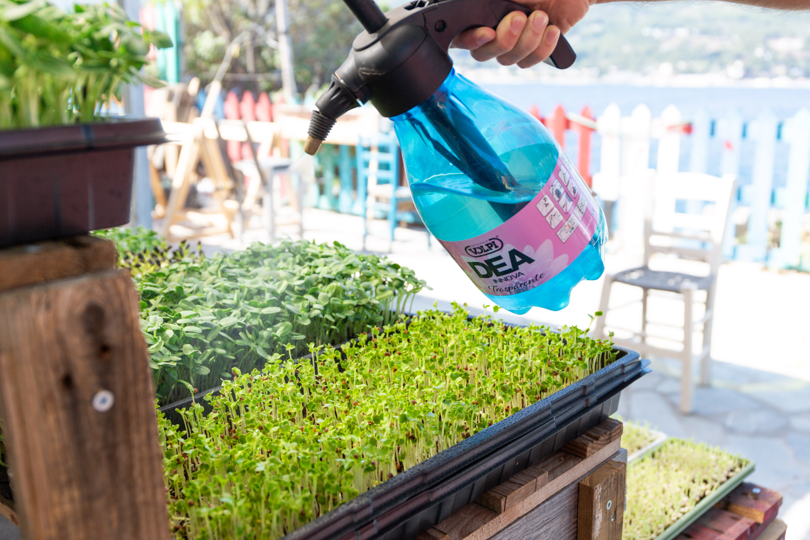
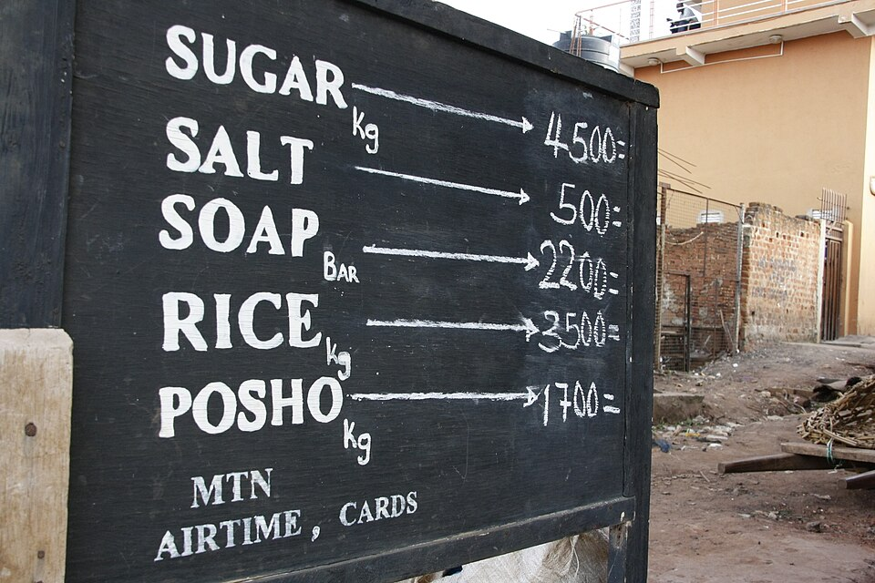

-

Greece · completed pilot, 2025
Microgreens farming, Greece
Refugees in Greece receive enough calories, but the food is low in quality and micronutrients. We built and ran a low-tech microgreens farm at Zervou Camp on Samos to test whether residents could grow fresh greens cheaply themselves. We're now working with partners in northern Greece to try it at household level.
About the project → Microgreens farming, Greece Read the report → Microgreens farming, Greece
-

Uganda · in progress
Food insecurity research, Uganda
Uganda's refugee policy expects new arrivals to become self-reliant by farming the land they are given. That is getting harder. Aid cuts mean that, for most, food support now ends within three months, while a first harvest takes at least four. Plots have also shrunk to around 10 × 15m, too small to feed a family. We are researching where support could stop households falling into that gap.